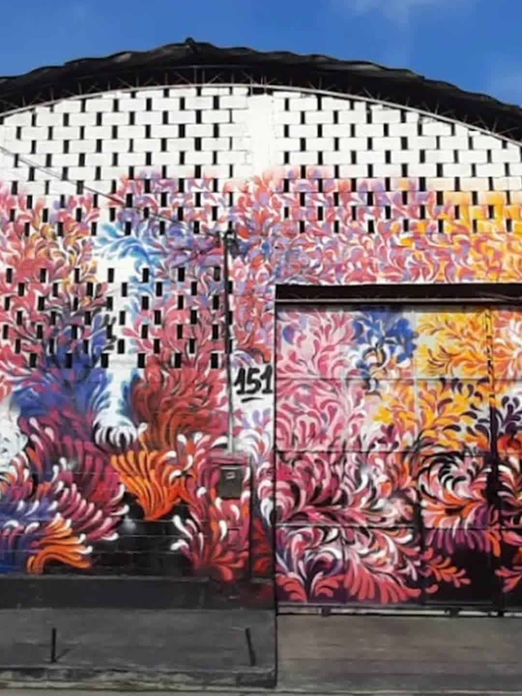

Leitura
Livros para todas as idades, do infantil ao RPG — com empréstimo gratuito e carteirinha da comunidade.
Em breve · inauguração em agosto
Unidade São Gonçalo · Espaço Cultural Panorama — uma biblioteca viva, feita de livros, pessoas e afeto, no coração do Colubandê.
Biblioteca Comunitária A Casa Amarela Oton São Paio — Unidade São Gonçalo.
A Casa Amarela é um lugar onde a leitura acolhe, a comunidade se encontra e novos futuros começam. A Biblioteca Comunitária A Casa Amarela nasceu com a missão de democratizar o acesso à leitura, à cultura, ao cuidado emocional e às oportunidades de desenvolvimento. Mais do que um espaço físico, somos um território vivo de encontros, afeto e transformação.
Todos os dias, crianças, jovens, adultos e idosos passam pelas nossas salas para ler, estudar, receber apoio, participar de oficinas, assistir ao cineminha, conversar, aprender e compartilhar suas histórias. A Casa Amarela é feita para e com a comunidade — um espaço onde cada pessoa é bem-vinda, respeitada e reconhecida.
Acreditamos que a leitura abre caminhos, que a cultura fortalece identidades e que o cuidado transforma realidades. Somos uma biblioteca, mas também somos muito mais: um ponto de encontro, uma rede de apoio e um lugar onde vidas mudam todos os dias.

É aqui que a história vai morar: o galpão colorido do Espaço Cultural Panorama — Rua Odete São Paio, 151, Colubandê.
Nossos projetos nascem da escuta do território e da convivência diária com crianças, jovens, adultos e famílias. Cada iniciativa fortalece vínculos, amplia oportunidades e transforma realidades de forma concreta e afetiva.
Livros para todas as idades, do infantil ao RPG — com empréstimo gratuito e carteirinha da comunidade.
Encontros, arte, cineminha e histórias no Espaço Cultural Panorama.
Um lugar seguro para ser quem você é, com acolhimento e escuta.
Aprendizado que caminha lado a lado com a escola, as famílias e o território.
A Casa Amarela nasceu do sonho do professor e escritor Pedro Gerolimich, o querido "Pedro do Livro", grande idealizador de projetos de incentivo à leitura. Desse sonho surgiu, em Anchieta — onde fica a sede oficial —, a Biblioteca Comunitária A Casa Amarela, iniciativa do Instituto Ciclos do Brasil.
Agora, essa história ganha um novo capítulo: a unidade São Gonçalo chega pelas mãos do Instituto São Paio, responsável por coordenar a biblioteca dentro do Espaço Cultural Panorama. Dois times, um mesmo sonho: abrir portas pela leitura.
Educador, poeta, escritor e político gonçalense, Oton José São Paio de Menezes (1949–2026) é uma das maiores referências da cultura e da educação de São Gonçalo — e o patrono do Instituto São Paio, que leva seu sobrenome.
Fundador do Colégio Odete São Paio, foi o idealizador e primeiro presidente da Academia Gonçalense de Letras, Artes e Ciências (1974), ocupando a cadeira nº 1, que tem Manuel Bandeira como patrono. Foi vereador, deputado estadual, Secretário de Educação e Secretário de Cultura do município, presidente da Associação Cultural de São Gonçalo e integrante de grupos de assistência social e de valorização da poesia, como o Grupo Ciranda.
É autor de obras como "A finalidade da vida é a alegria", "Você é aquilo que você pensa", "Painel do Olhar" e "Amanhecer das Palavras".
Dar o seu nome à biblioteca é semear, em cada leitor, o que ele plantou a vida inteira: a certeza de que a educação e a poesia transformam uma cidade.
O vento mudou em São Gonçalo. Acompanhe a contagem regressiva para a inauguração no Instagram @institutosaopaio.
Em agosto, a Casa Amarela abre as portas no Espaço Cultural Panorama — Rua Odete São Paio, 151, Colubandê, São Gonçalo/RJ.
Apoie a Biblioteca A Casa Amarela e ajude a abrir portas pela leitura desde o primeiro capítulo.
Quero apoiar Quero ser parceiro